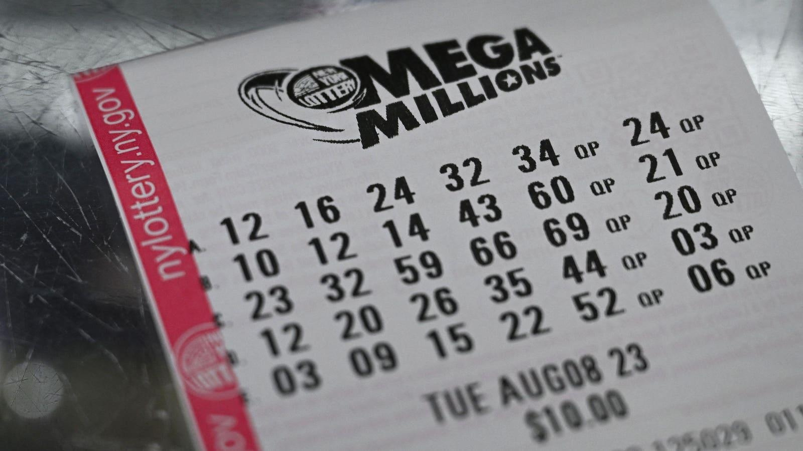

Mega Millions Jackpot Nears $1 Billion-Here’s How Much A Winner Could Take Home After TaxesTopline The Mega Millions jackpot surged to $977 million—the sixth biggest prize in the game’s history—after no tickets matched all six numbers drawn Tuesday night, although the winner will take home a much smaller purse after paying their taxes. Key Facts If a winner emerges in the next draw on Friday night, they can pick between getting the $977 million prize spread across 30 annual installments or a cash prize of $461 million—often the popular pick. The lump sum cash prize will drop to $350.4 million after a mandatory federal tax withholding of 24% is applied. Depending on their taxable income, the winner could then face a federal marginal rate as high as 37%, further slashing their winnings to $290.4 million. If the winner chooses the installment route, their annual payments of $32.57 million would drop to $20.5 million, if the 37% federal marginal rate is applied. The winner may also face additional taxes from their state of residence, as some states like New York tax lottery winnings at 10.9%, while others like Texas, Florida, and California don’t. What To Watch For Mega Millions’ next draw is scheduled for Friday night but before that, a drawing for the Powerball lottery will take place on Wednesday. The Powerball has not seen a jackpot winner since New Year’s Day and the big prize has now risen to $687 million. Big Number 1-in-302.6 million. Those are the abysmal odds a Mega Millions ticket buyer has to overcome to win the jackpot. This is even worse than the Powerball jackpot’s already poor odds of 1-in-292.2 million. Surprsing Fact There have been five Mega Millions jackpot prizes worth more than a billion dollars so far in the game’s history. The biggest of these jackpots was worth $1.6 billion and it was won by a single ticket in Florida. |
 |